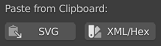

Clipboard Utilities #
NijiGPen provides with the clipboard enhancement that allows users to paste specific types of data produced by other graphic editing software.

Paste SVG Codes #
It is common for graphic design software to copy vector shapes as SVG code, including a small amount of painting software such as Clip Studio Paint. You can directly paste the shapes inside the current Grease Pencil object through NijiGPen.
The parsing of SVG codes is in the same way as the standard import function of Blender, except for an additional option to automatically detect holes in imported shapes and make them transparent.
Paste Palettes #
For online services that share or generate color palettes, the color data can also be imported in Blender through the clipboard.
One supported format is XML, used by applications such as Adobe Color to store color data.
Some other similar services just use an array of hex codes to represent colors. Hex codes separated by either space or any symbol can be recognized, such as:
#FFEE93 #F5D782 #E97878 #9B5151ffee93f5d782e978789b5151f3c969,edff86,fff5b2,d4fcc3,362c28["f3c969","edff86","fff5b2","d4fcc3","362c28"]
The add-on also has another operator to import palette/swatch files of several more complicated formats, which are usually exported by other graphics software. Please refer to this page.
Tints and Shades #
This option generates multiple variants of each color imported, by changing the brightness of imported color.